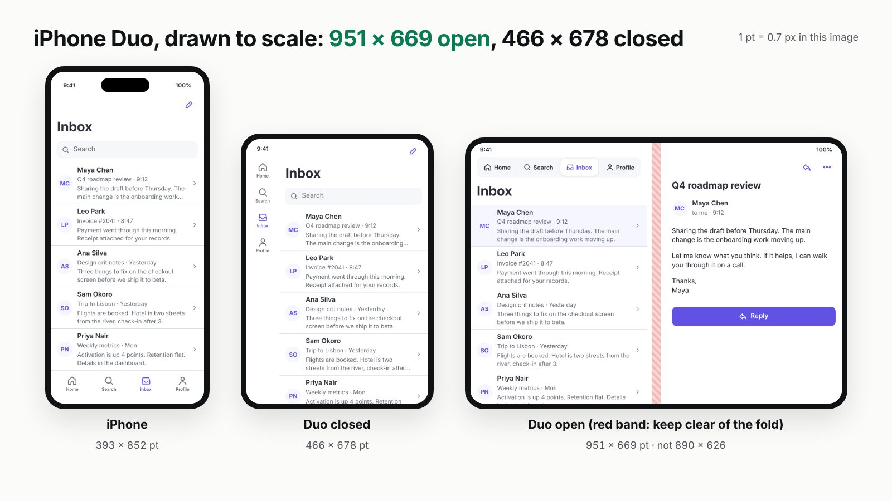

Guide · Mobile
iPhone Duo frame sizes: design at 951 × 669, not 890 × 626
If you design the open iPhone Duo on an 890 × 626 frame, your layout is about 7% smaller than what the app actually renders. Here are the sizes to use, where they come from, and what changes in each pose.

The sizes
| Pose | Points | Where it comes from |
|---|---|---|
| Duo closed (outer display) | 466 × 678 | Panel 1398 × 2034 px at 3x. Screenshot size and panel match, so no scaling. |
| Duo open, landscape | 951 × 669 | App Store Connect asks for inner-display screenshots at 2853 × 2007 px, which is 951 × 669 pt at 3x. |
| Duo open, portrait | 669 × 951 | The same display turned. |
| Split View, one half | about 475 × 669 | Half of 951. Use it to test each app in a two-app layout. |
| Preset to avoid | 890 × 626 | The inner panel's 1878 × 2670 px divided by 3. About 6.9% smaller than the size apps render at. |
Why two numbers exist. The panel has 1878 × 2670 pixels, but the screenshot size Apple asks for is larger. The likely reading, shared by designers who compared the two, is that iOS draws the open screen at 951 × 669 pt and scales it down to the panel, as iPhone 8 Plus once did. Apple has not stated this in one sentence, so treat it as the best evidence, not a quote.
What changes in each pose
- Closed: Apple moves tab bars and toolbars to the side to give content more height. In Apple's iOS 27 UI kit the side rail measures 84 pt wide. Keep content out of that strip.
- Open: the screen is wide, close to the shape of a paper page. A phone-width column in the middle wastes it; use two panes, such as a list on the left and detail on the right.
- The fold: keep text and controls off the hinge line at x = 475.5 pt. Our starter keeps a 24 pt band clear around it. That band is our own design reserve, not an Apple number.
- Split View: each app gets about half the open screen, so your layout must also work at roughly 475 pt wide.
A 2-minute check for any screen
- Set the open frame to 951 × 669 (portrait 669 × 951), never 890 × 626.
- Turn on a guide at x = 475.5 and move any text or button off it.
- When open, is content on both halves? When closed, is the side strip clear for the rail?
- Tap targets at least 44 × 44 pt, with 8 pt between neighbours.
- Make text 200% larger: nothing clips, nothing scrolls sideways.
Free: Duo-ready starter. List and detail, Settings, and Search, each in iPhone, closed, open and Split View, light and dark: 24 HTML screens at the real sizes, plus duo_check.py, a script that runs the 12 checks above on your own screens in a real browser. The 24 screens pass 222 of 222 checks. No sign-up.
Sources
- Apple, iPhone Duo technical specifications (panel resolutions).
- Apple Human Interface Guidelines, "Designing for iPhone Duo" (side placement of toolbars and tab bars when closed).
- Figma Forum, "iPhone Duo Open preset is 890×626, but Apple's kit and App Store Connect point to 951×669", 27 October 2026.
- Blake Crosley, "iPhone Duo for Developers: The 1.42 Problem and the SDK Gap", updated 10 September 2026.
iPhone is a trademark of Apple Inc. UI/UX Pass is not affiliated with Apple.